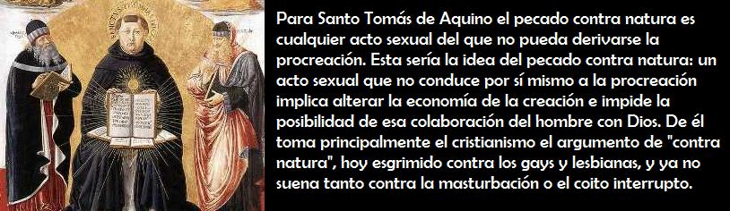
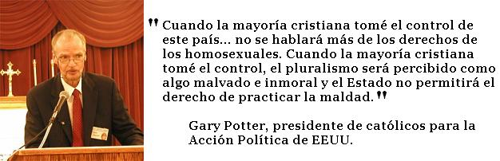
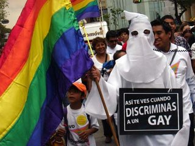
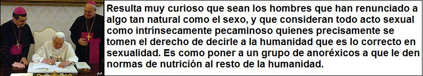
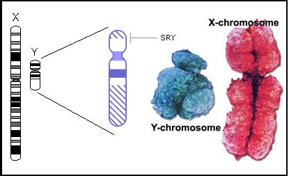
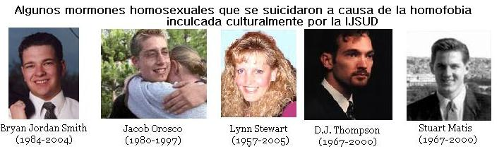

En los últimos años se ha gastado mucha tinta en noticias y artículos relacionados con el reconocimiento de los homosexuales, la exigencia de leyes antidiscriminación, de derechos de protección social y jurídica para las parejas de homosexuales, por no mencionar los matrimonios entre personas del mismo sexo. Estos temas han sido objeto de diversas reacciones de las cuales las diferentes religiones del mundo han tomado partido de forma activa. Estas reacciones van desde la acérrima homofobia de la Iglesia Bautista Westboro, la cual se manifiesta en las calles estadounidenses con carteles que dicen “Dios odia a los maricas” o “No a leyes especiales para los maricas” hasta posturas más liberales como la de la Iglesia Episcopal de EEUU que nombró como obispo de New Hamspire en 2003 a Gene Robinson, un homosexual quien vive con su pareja desde hace 17 años.
Este texto tiene por objeto presentar las diferentes posiciones presentadas por las religiones en los tiempos actuales hacía la homosexualidad, además de la postura humanista secular (la cual es la mantenida por la mayoría de ateos y agnósticos) junto con un análisis secular de los argumentos religiosos, principalmente los judeocristianos que tradicionalmente se han esgrimido en contra de la homosexualidad.
Cristianismo y homosexualidad
Puesto que en nuestro medio el cristianismo es la religión mayoritaria se iniciará con esta el análisis. Respecto a la homosexualidad hay dos posturas definidas, la conservadora, que la considera un pecado grave. Esta facción se ha opuesto a la aprobación de leyes contra la discriminación y al reconocimiento jurídico de las parejas homosexuales. Y la posición liberal que no ve en la homosexualidad un pecado y que insta a las congregaciones a tomar un apostura más abierta.
La posición conservadora en el cristianismo está ligada al fundamentalismo bíblico, es decir la creencia que la Biblia debe tomarse literalmente y que es totalmente cierta e inspirada en cuestiones de doctrina, normas morales, historia, orígenes y cosmología. Tal es el caso de denominaciones protestantes tales como los bautistas, cristianos carismáticos, pentecostales, adventistas y en grupos paracristianos como los mormones y testigos de Jehová. La Iglesia Católica si bien no considera correcta la lectura literal de toda la Biblia es, en su cúpula y dirigencia, muy conservadora en este asunto, tal como puede notarse en los documentos emitidos por el Vaticano. La Iglesia Ortodoxa, predominante en Rusia y Grecia, como habría de esperarse por su nombre, mantiene una posición similar a la de la Iglesia Católica. Todas las anteriores consideran la homosexualidad como un pecado y una aberración sexual. También es común que en estos grupos se hable de la homosexualidad como una actividad “contra natura”. La mayoría de los líderes de las iglesias conservadoras afirman que a pesar de rechazar la homosexualidad, sus iglesias no odian a los homosexuales sino que se les invita a unirse a sus filas pidiéndoseles que por medio de la oración y el estudio de la Biblia puedan dejar su orientación sexual así como cualquier otra persona pudiese superar el robo o la mentira.
Los versículos de la Biblia que dan base a la posición conservadora son:
“No te echarás con varón como con mujer; es abominación” (Levítico 18:22).
“Si alguno se ayuntare con varón como con mujer, abominación hicieron; ambos han de ser muertos, sobre ellos será su sangre” (Levítico 20:13).
“No haya ramera de entre las hijas de Israel, ni haya sodomita de entre los hijos de Israel” (Deuteronomio 23:17)
“¿No sabéis que los injustos no heredarán el reino de Dios? No erréis; ni los fornicarios, ni los idólatras, ni los adúlteros, ni los afeminados, ni los que se echan con varones, ni los ladrones, ni los avaros, ni los borrachos, ni los maldicientes, ni los estafadores, heredarán el reino de Dios” (1 Corintios 6:9-10).
“Por esto Dios los entregó a pasiones vergonzosas; pues aún sus mujeres cambiaron el uso natural por el que es contra naturaleza, y al igual modo también los hombres, dejando el uso natural de la mujer, se encendieron con su lascivia unos con otros, cometiendo hechos vergonzosos hombres con hombres, y recibiendo en sí mismos la retribución debida a su extravío. Y como ellos no aprobaron tener en cuenta a Dios, Dios los entregó a una mente reprobada, para hacer cosas que no convienen” (Romanos 1:26-28)
Además de los anteriores textos, los cristianos (al igual que los judíos) se remiten con frecuencia a la historia de la destrucción de Sodoma y Gomorra, la cual se registra en Génesis 19:1-29 para oponerse a la homosexualidad. Esta historia narra que Lot, el sobrino del patriarca Abraham vivía en la ciudad de Sodoma, la cual fue visitada una tarde por un par de ángeles. Lot, hospitalariamente les dio posada al par de visitantes. En la noche los varones de esta ciudad armaron una turba que llegó a la casa de Lot pidiendo que les diese al par de hombres para que los “conocieran”. Lot, el hombre piadoso de la ciudad, se opuso y ofreció a sus dos hijas a la turba para que tuvieran sexo con ellos. Frente a tal conmoción los ángeles volvieron ciegos a los agitadores que estaban junto a la puerta, y le dijeron a Lot que evacuara la ciudad porque esta sería destruida por el Dios Jehová. Las ciudades de Sodoma, Gomorra y toda la llanura fueron destruidas con una lluvia de “fuego y azufre”. En la huída la esposa de Lot contrario la orden de los ángeles de no voltear a mirar mientras la llanura era destruida, lo que conllevó a que fuera convertida en una estatua de sal. El Nuevo Testamento contiene varios versículos que toman la historia de la destrucción de Sodoma como advertencia contra lo que los escritores consideraban inmoral. Tales textos son Mateo 10:15, Lucas 17:29 y Judas 1:9.

Uno de los personajes que más contribuyeron a formar la concepción ortodoxa sobre la homosexualidad en la cristiandad fue Santo Tomás de Aquino, a quien debemos principalmente el calificativo de pecado “contra natura” a la homosexualidad.
En su obra Summa Theologica II q- 154 Tomás ubica la homosexualidad dentro de la lujuria (en aquella época no existían los términos homosexual, heterosexual, ni el de lesbiana, de hecho no se consideraba que existiesen individuos con una orientación homosexual sino individuos que caían en este “vicio” por lujuria):
“El pecado de lujuria consiste en el uso del placer venéreo en contra de la recta razón… la disconformidad con la recta razón puede tener su origen por no ordenarse al fin del acto venéreo. Y así, si se impide la generación de la prole, se da el vicio contra la naturaleza, como en todo acto venéreo del que no puede seguirse la generación.”.
“Existe una determinada especie de lujuria en la que hay una razón de torpeza que hace que el acto venéreo sea malo. Esto puede darse bajo un doble aspecto. Porque choca contra la recta razón, como sucede en todo vicio de lujuria. O porque se opone también al mismo orden natural de acto venéreo apropiado a la especie humana, y entonces se llama vicio contra la naturaleza”.
Para el “padre de la Iglesia” los vicios contra natura pueden clasificarse como inmundicia, bestialidad y vicio sodomítico. Todos ellos tienen como común denominador el no conducir a la reproducción, en este sentido la masturbación, especialmente la masculina también sería un acto “contra natura”.
Las ideas del aquinate, denominado por los católicos como “doctor angélico” establecieron el punto de vista oficial de la Iglesia Católica que se ha manifestado a través de la Congregación para la Doctrina de la Fe (heredera de la Inquisición).
La posición oficial de la Iglesia Católica en tiempos recientes se dio a conocer en 1975 por medio de la “Congregación para la Doctrina de la Fe,” que se afirmó que:
“Según el orden moral objetivo, las relaciones homosexuales son actos privados de su regla esencial e indispensable. En las Sagradas Escrituras están condenados como graves depravaciones e incluso presentados como la triste consecuencia de una repulsa de Dios”. (Congregación para la Doctrina de la Fe (CDF), Declaración “Persona humana” sobre algunas cuestiones de ética sexual, 29 de diciembre de 1975, número 8. 2. Ibíd.)
Sin embargo, la iglesia vaticana distingue entre la inclinación homosexual (u homosexualidad) y la actividad homosexual (u homosexualismo), enseñando que la primera no es pecado en sí misma, “aunque conlleva a actos que sí lo son”.
En su declaración del 15 de enero de 1976, el Papa Pablo VI sostuvo que el único contexto en el que el sexo es “bueno” es aquel que permita la procreación:
“Sea cual sea el motivo, el uso deliberado de la facultad sexual fuera de las relaciones conyugales normales va esencialmente en contra de su finalidad”
La oposición del Vaticano fue particularmente agresiva cuando España decidió legalizar el matrimonio homosexual en . En esos días Inocente García de Andrés, director de la Secretaría de Familia y Vida de la Conferencia Episcopal durante el pontificado de Juan Pablo II afirmó que:
Las parejas homosexuales “sólo pretenden escenificar formas de familia en las que la palabra familia está entre comillas, sin interesarles la definición real de familia y sin la capacidad para traer hijos al mundo dentro de la unidad”.
“Las parejas homosexuales no pueden formar familias ni matrimonio porque les falta la complementariedad sexual y la transmisión de vida y no se ajusta a la única definición de familia que existe que es la de la Iglesia Católica y la del diccionario de la Real Academia”.
Mientras que un documento de doce páginas dado por el Vaticano y firmado por Juan Pablo II pide al político católico que
“se oponga con todos los medios posibles a las leyes que equiparan las parejas homosexuales con el matrimonio y que dé a conocer su oposición: se trata de un acto de testimonio de la verdad”.
En el mundo protestante fundamentalista la discusión sobre si la homosexualidad es “correcta o no”, se basa en lo que dice la Biblia sin dar espacio a los modernos trabajos de psicólogos y psiquiatras, para ellos la respuesta ya está escrita. Varios líderes del cristianismo fundamentalista han hecho declaraciones abiertamente homofóbicas como las siguientes:
“Los homosexuales quieren venir a las iglesias, perturbar los servicios de la iglesia, arrojar sangre por todo alrededor, contagiar el sida a la gente y escupir en la cara a los ministros”
—Pat Robertson, Fundador de la coalición cristiana en EE.UU.
“Muchas de esas personas involucradas con Adolf Hitler eran satanistas, muchas de ellas homosexuales; las dos cosas parecen ir juntas.”
—Pat Robertson
“Nunca habrá paz en el mundo hasta que la casa de Dios y el pueblo de Dios reciban su recto lugar de liderazgo en la cima del mundo. ¿Cómo puede haber paz cuando… (los) homosexuales están en la cima?”
—Pat Robertson
“El sida no es solamente el castigo de Dios a los homosexuales; es el castigo de Dios a una sociedad que tolera a los homosexuales”
—Reverendo Jerry Falwell.

“Esta ciudad (hablando de Bogotá) será considerada como la capital espiritual de Latinoamérica, y no la capital de la sodomía.”
—Pastor Ricardo Rodríguez, en una manifestación en oposición a la aprobación de una ley de protección social a parejas de homosexuales
“Creemos que la neumonía atípica cesará cuando la marcha del SIDA (refiriéndose a una marcha gay) sea cancelada. Que Dios nuestro Señor tenga misericordia de esta ciudad y de esta nación”. Ken Cambell, evangelista canadiense en un discurso de oposición a la legalización del matrimonio gay en Canadá. Junio de 2003.
Uno de los grupos cristianos más homofóbicos es la ya mencionada Iglesia Bautista Westboro, dirigida por el pastor Fred Waldron Phelps quien ha organizado manifestaciones callejeras en la que sus feligreses llevan carteles que dicen “Dios odia a los homosexuales” “Homosexuales = perros, cásense en el infierno” y otros mensajes agresivos. Estas son sus palabras:
“La Biblia dice que Dios ama a todos ¿verdad? No… Romanos 9:13 dice que Dios odió a Esaú, y Salmos 5:5 dice que Dios aborrece a todos los que hacen iniquidad -por ejemplo los maricones- … Posiblemente pienses en “Dios es amor.” Cierto que Dios es amor, hacía Sus escogidos (Sus hijos). Pero no es amor hacía los reprobados (hijos de Satanás). Por eso sus elegidos van al cielo y los reprobados van al infierno… Además Dios dice específicamente que el tiene en abominación a las personas que toman parte en la sodomía (y otras formas de perversión sexual): Si alguno se ayuntare con varón como con mujer, abominación hicieron; ambos han de ser muertos; sobre ellos será su sangre… ¿Comprendes? Dios odia a los maricones.

Así pues, las iglesias cristianas conservadoras afirman que la homosexualidad es intrínsecamente perversa y al considerarse cada una de ellas como la depositaria de la verdad absoluta se han creído en libertad de imponer sus normas morales a toda la sociedad.
La posición moderada no discrimina a los homosexuales como pecadores, ni ve en la homosexualidad una monstruosidad tal como la ven los grupos ya mencionados. Muchos moderados ven que el castigo del Dios Jehová a Sodoma mencionado en el Génesis no se debió a la homosexualidad sino a la falta de hospitalidad de sus gentes, para esto citan los siguientes pasajes bíblicos:
“He aquí que esta fue la maldad de Sodoma tu hermana: soberbia, hartura de pan y abundancia de ociosidad tuvo ella y sus hijas; y no corroboró la mano del afligido y del menesteroso. (Ezequiel 16:49)
“Y cualquiera que no os recibiere ni oyere vuestras palabras, salid de aquella casa o ciudad, y sacudid el polvo de vuestros pies. De cierto os digo, que el castigo será más tolerable a la tierra de los de Sodoma y de los de Gomorra en el día del juicio que a aquella ciudad.” (Mateo 10:14-15)
Los cristianos no fundamentalistas incluso mencionan que el legendario rey David, padre del Rey Salomón mantuvo una relación sentimental y homoerótica con Jonathan, el hijo del Rey Saúl. Para esto se basan en los siguientes textos:
“Y aconteció que cuando él hubo acabado de hablar con Saúl, el alma de Jonathan quedó ligada con la de David, y lo amó Jonathan como a sí mismo.” (1 Samuel 18:1)
“Entonces se encendió la ira de Saúl contra Jonathan y le dijo: Hijo de la perversa y rebelde, ¿acaso no sé yo que tú has elegido al hijo de isaí (a David) para confusión tuya, y para confusión y vergüenza de tu madre? (1 Samuel 19:30)
(David dice:) “Angustia tengo por ti, hermano mío Jonatán, que me fuiste muy dulce. Más maravilloso me fue tu amor que el amor de las mujeres”. 2 Samuel 1:16
Los cristianos liberales ven que tomar al pie de la letra la orden de matar a los homosexuales en el Levítico es desproporcionado para nuestra cultura. Estos piden basar la ética y la moral en el amor y comprensión hacía el prójimo, y ven las prohibiciones del levítico como impurezas rituales para ejercer el sacerdocio. Como ejemplo de postura liberal se encuentra la Iglesia Luterana de América (ELCA, por sus siglas en inglés) la cual en un documento publicado en diciembre de 1991 llamado “La sexualidad Humana y la fe Cristiana” exhorta a sus miembros a que evalúen los prejuicios contra los homosexuales. En sus propias palabras:
“Lo que nosotros encontramos personalmente ofensivo, no es necesariamente pecaminoso.”
Además dice que
“Al pronunciar nuestro juicio sobre la actividad sexual entre dos personas del mismo sexo, tenemos que distinguir entre los tiempos bíblicos y los nuestros.”
En octubre de 1993 la ELCA volvió a hacer un llamado hacía la tolerancia.
La Iglesia Episcopal, una rama de la Iglesia Anglicana, dio un paso adelante a favor de la no discriminación al nombrar en los Estados Unidos a Gene Robinson, un homosexual que vive desde hace muchos años con su pareja, como obispo de New Hamspire. A diferencia de la Iglesia Católica, la Anglicana permite que sus sacerdotes se casen e incluso ha permitido que las mujeres accedan al sacerdocio.
La designación de Robinson produjo una gran conmoción en las comunidades episcopales de todo el mundo liderando la oposición el obispo de Nigeria, Meter Akinola.
Algunos de los teólogos liberales han dicho:
“La homosexualidad a la que se opone el Nuevo Testamento es la pederastia de la cultura greco-romana; las posturas hacia la pederastia y, en parte, el lenguaje usado para oponerse a ella, están dadas por la tradición judía”.
—Robin Scroggs, Profesor de Teología Bíblica. Union Theological Seminary, Nueva York (EUA).
“El más fuerte argumento del Nuevo Testamento contra la actividad homosexual, presentándola como intrínsecamente inmoral, ha sido tomado tradicionalmente de Romanos 1:26, donde esta actividad es indicada como para physin. La traducción común para esta frase ha sido “contra natura”. Es posible interpretar de dos maneras el sentido que Pablo quiso darle a esta frase. Por un lado podría referirse al pagano como individuo, quien va más allá de sus propios apetitos sexuales para gozar de nuevos placeres sexuales. La segunda posibilidad es que physin se refiere a la “naturaleza” del pueblo elegido, al cual según el Levítico, le era prohibido mantener relaciones homosexuales”.
—John J. McNeill, Profesor Adjunto de Sicología. Union Theological Seminary, Nueva York (EUA).
“El término hebreo toevah, traducido aquí como “abominación”, no significa necesariamente algo intrínsecamente malo, como la violación o el robo (tratados también en el Levítico), sino algo que es ritualmente impuro para los judíos, como comer carne de cerdo o mantener relaciones sexuales durante la menstruación, ambas cosas prohibidas en esos mismos capítulos.”
—John Boswell, Profesor de Historia. Yale University, New Haven, Connecticut (EUA).

Si bien los círculos cristianos que no atacan la homosexualidad han crecido en los países de habla inglesa las posturas liberales siguen siendo minoritarias en el mundo cristiano.
Judaísmo y homosexualidad
El judaísmo comparte con el cristianismo la consideración del Antiguo Testamento como palabra inspirada de Dios, de hecho los cristianos tomaron estos escritos del judaísmo, es por eso que los judíos ortodoxos esgrimen los mismos textos del levítico y la historia de Sodoma y Gomorra para oponerse a la homosexualidad. Al igual que en el cristianismo hay sectores liberales que son más tolerantes y menos discriminativos.
En 2006 y 2007 los judíos ultraortodoxos se manifestaron en abierto rechazo a la manifestación del orgullo gay en Jerusalén, aduciendo que tal desfile “contaminaba la ciudad”.
Islamismo y homosexualidad
La homosexualidad está prohibida en la cultura musulmana, si bien es cierto que en el Corán no hay textos que prohíban expresamente la homosexualidad los clérigos esgrimen el relato de Sodoma y Gomorra, copiado de la Biblia, como una historia que muestra el castigó de Alá a la homosexualidad.
En los países que actualmente se castiga los actos homosexuales con prisión, latigazos o incluso con la pena de muerte son islámicos, por la aplicación de la sharia o ley islámica.
La ley islámica o sharia está basada en cuatro preceptos: las enseñanzas del Corán, las prácticas de Mahoma o sunna, el consenso de la comunidad ortodoxa o ijma, y el razonamiento por analogía basándose en los anteriores preceptos o quiyas.
Los textos del Corán que hacen alusión a la historia de Sodoma son:
Y a Lot. Cuando dijo a su pueblo: “¿Cometéis una indecencia que ninguna criatura ha cometido antes? Ciertamente, por concupiscencia, os llegáis a los hombres en lugar de llegaros a las mujeres. ¡Sí, sois un pueblo inmoderado!”. Lo único que respondió su pueblo fue: “¡Expulsadles de la ciudad! ¡Son gente que se las da de puros!”. Y les salvamos, a él y a su familia, salvo a su mujer, que fue de los que se rezagaron. E hicimos llover sobre ellos una lluvia: ¡Y mira cómo terminaron los pecadores! (Corán 7:80-84)
El pueblo de Lot contradijo a los enviados. Cuando su hermano Lot les dijo: “¿Es que no vais a temer a Alá? Tenéis en mí a un enviado digno de confianza. ¡Temed, pues, a Alá y obedecedme! No os pido por ello ninguna recompensa. Mi recompensa no incumbe sino al Señor del universo. ¿Os llegáis a los varones, de entre los creados, y descuidáis a vuestras esposas, que vuestro Señor ha creado para vosotros? Sí, sois gente que viola la ley”. Dijeron: “Si no paras, Lot, serás, ciertamente, expulsado”. Dijo: “Detesto vuestra conducta. ¡Señor! ¡Sálvanos, a mí y a mi familia, de lo que hacen!” Y les salvamos, a él y a su familia, a todos, salvo a una vieja entre los que se rezagaron. Luego, aniquilamos a los demás. E hicimos llover sobre ellos una lluvia. ¡Lluvia fatal para los que habían sido advertidos! Ciertamente, hay en ello un signo, pero la mayoría no creen. ¡En verdad tu Señor es el Poderoso, el Misericordioso! (Corán 26:160-175)
Los hadices, hadiths o dichos atribuidos al Mahoma contienen declaraciones más directas en contra de la homosexualidad. Estos son:
“Condenado por Dios es aquel que hace lo que la gente de Lot”
“Ningún hombre debe mirar a las partes privadas de otro hombre y ninguna mujer debe mirar a las partes privadas de otra mujer, y dos hombres no deben dormir en la misma cama bajo una misma manta.”
“Aquel que mantenga relaciones sexuales con una mujer y penetre su ano, o con un hombre o un muchacho, aparecerá el último día apestando peor que un cadáver; la gente lo encontrará insoportable hasta que entre en el fuego del infierno, y Dios anulará todas sus buenas obras.”
La sharia condena la homosexualidad con la muerte. “La homosexualidad es haram (pecado)” dicen los clérigos musulmanes y como en los países musulmanes no hay separación entre estado y religión la intolerancia hacia los gays y lesbianas está siempre presente. La falta de un estado laico en los países musulmanes trae como resultado una marcada homofobia.
Según un informe de Libertad digital de 2006:
“La ley islámica que se aplica de facto en gran parte de los países musulmanes castiga la homosexualidad con penas que van de los 100 latigazos a la muerte por lapidación. El informe de Amnistía Internacional de 1999 recogía violaciones de los Derechos Humanos de los homosexuales en los 24 países de la Liga Árabe, que comparten la religión islámica. Según la organización Outrage! más de 4.000 homosexuales han sido ejecutados en Irán desde 1980. En Afganistán el 25 de febrero de 1998, cinco hombres acusados de ser homosexuales fueron aplastados por un tanque durante más de 30 minutos, ante el júbilo de cientos de individuos. El día de año nuevo de 2002 tres hombres fueron decapitados en Arabia Saudí acusados de ser homosexuales.
Países como Yemen, Mauritana, Irán, Sudán, Arabia Saudí, Nigeria (en los estados islámicos) y Qatar han aplicado durante años la ley islámica, que contempla la muerte por lapidación como pena para la homosexualidad. El artículo 377 del código penal de Malasia impone penas de hasta 10 años de cárcel por “ofensas antinaturales”. Este mismo artículo castiga con 20 años de cárcel las relaciones homosexuales con penetración. Además el gobierno ha creado unos organismos locales llamados Badar Islámico que se encarga en cada barrio de denunciar “las actividades inmorales”.
La homosexualidad está penada con de tres a diez años de prisión en: Brunei, Túnez, Marruecos, Libia, Siria, Jordania, Argelia, Kuwait, entre otros. En Pakistán se equipara con la zoofilia. Está prohibida en todo el mundo musulmán. Evidentemente, no se permiten ningún tipo de asociaciones de gays y lesbianas.”
Existen también grupos de homosexuales musulmanes especialmente en los países occidentales que han abogado por una reinterpretación de la historia de Sodoma y Gomorra similar a la hecha por los cristianos y judíos liberales. En la ciudad de San Francisco, famosa por su gran comunidad homosexual, existe un lugar de reunión para gays musulmanes.
Budismo y homosexualidad
El budismo en general no se expresa sobre la homosexualidad en términos prohibitivos y condenatorios. La única indicación que hace el Dharma (término dado a la verdad eterna enseñada por Buda con relación a la naturaleza de la existencia) sobre la sexualidad es uno de los votos de Pratimoksha, los votos básicos del practicante laico, el cual especifica que si se tiene sexo, debe ser un “sexo correcto”. El Dharma entiende como correcto aquello que no cause sufrimiento ni daño al prójimo, por lo tanto si dos personas del mismo sexo, mayores de edad y libremente aceptan mantener una relación sexual, y/o establecer una relación de pareja, sin daño físico y sin engaño a una tercera persona, no se considera como falta de virtud.
Sin embargo, algunos autores budistas occidentales han catalogado la homosexualidad como una práctica no virtuosa, mientras que muchos otros no la consideran como incorrecta ya que entre las 10 no virtudes se encuentra la practica sexual irresponsable, por lo que se puede afirmar que mientras el gay o la lesbiana sean responsables y no perjudiquen a nadie sería correcta su conducta.
En una visita a Colombia en mayo de 2006 el Dalai Lama fue entrevistado por el diario El País, y se le preguntó su opinión sobre la homosexualidad, a esto respondió: “Creo que los creyentes religiosos deben atenerse a lo que ordena su tradición espiritual. Pero los no creyentes están en el derecho de hacer lo que quieran, siempre y cuando su relación sea segura y no haya abuso y los dos estén de acuerdo. En este caso estaría correcto”.
Humanismo secular y homosexualidad
El humanismo secular busca respuestas a las situaciones sociales, éticas y morales por medio del uso de la razón, teniendo en cuenta el bienestar y dignificación del ser humano, y dado que el humanismo secular se basa en la razón se dejan de lado las posiciones que se fundan dogmáticamente en líderes religiosos, libros sagrados o tradiciones incuestionables. De esta manera el humanismo secular considera que los estudios recientes de psicólogos y médicos sobre la homosexualidad, que han retirado el calificativo de enfermedad mental o depravación a la homosexualidad deben hacernos reflexionar sobre la aceptación de los gays y lesbianas como ciudadanos libres de elegir su forma de vida. El humanismo secular también ve la exigencia de leyes antidiscriminación, y de derechos de protección social y jurídica para las parejas de homosexuales como una consecuencia propia del desarrollo y extensión de las libertades individuales en una sociedad democrática liberal.
Contra natura
Uno de los argumentos más comunes contra la homosexualidad es el de afirmar que es una práctica “contra natura”, el cual es esgrimido con mucha frecuencia por los religiosos fundamentalistas. Como ya se mencionaba anteriormente el argumento que los actos homosexuales son “contra natura” lo debemos a la literatura cristiana, desde el texto atribuido a Pablo de la epístola a los Romanos y los comentarios de santo Tomás de Aquino en la Summa Theologica:
“Por esto Dios los entregó a pasiones vergonzosas; pues aún sus mujeres cambiaron el uso natural por el que es contra naturaleza, y al igual modo también los hombres, dejando el uso natural de la mujer, se encendieron con su lascivia unos con otros, cometiendo hechos vergonzosos hombres con hombres… (Romanos 1: 26-28)
“El pecado de lujuria consiste en el uso del placer venéreo en contra de la recta razón… la disconformidad con la recta razón puede tener su origen por no ordenarse al fin del acto venéreo. Y así, **si se impide la generación de la prole, se da el vicio contra la naturaleza, * como en todo acto venéreo del que no puede seguirse la generación.”.* (Santo Tomás de Aquino)
Como se puede ver lo antinatural de los actos homosexuales, según los fundadores del cristianismo, es tener sexo que no conduzca a la reproducción. San Pablo y Santo Tomás se toman muy en serio el precepto del Génesis de “multiplicaos y henchid la Tierra.” Esta idea no está para nada desterrada de la mentalidad católica, pues como lo anunciaba el papa Juan Pablo II por medio de un documento firmado también por el actual pontífice, entonces cardenal Joseph Ratzinger, prefecto de la Congregación para la Doctrina de la Fe (ex Santo Oficio) en julio de 2003:
“El matrimonio es santo, mientras que las relaciones homosexuales contrastan con la ley moral natural. Los actos homosexuales cierran el acto sexual al don de la vida”
Reducir el matrimonio al fin reproductivo es fruto de una mirada muy estrecha. Sexualidad es mucho más que el acto sexual, y una relación de pareja es mucho más que sexo y propagación de los genes. ¿Entonces, que decir de un matrimonio en el que uno o ambos conyugues sea estéril? ¿Ya no sería “natural”? ¿No sería posible el matrimonio entre adultos mayores que se amen por el hecho que ya no puedan tener hijos? ¿No debe ser el amor sincero, “el ágape de los griegos,” lo que hace natural una unión? Ahora la misma institución bimilenaria se escandaliza porque una mujer agredida físicamente por su esposo se divorcie. Eso, para ellos no es antinatural. Resulta muy curioso que sean los hombres que han renunciado a algo tan natural como el sexo, y que consideran todo acto sexual como intrínsecamente pecaminoso quienes precisamente se tomen el derecho de decirle a la humanidad que es lo correcto en sexualidad. Es como poner a un grupo de anoréxicos a que le den normas de nutrición al resto de la humanidad.
Después de los estudios sobre la homosexualidad y la sexualidad en general que han adelantado investigadores como Master y Johnsons o Alfred Kinsey podemos decir que la discusión sobre si los actos homosexuales son naturales o “contra natura” reflejan más el grado de desarrollo y tolerancia de la sociedad que el estado real de la naturaleza.

¿Aberración o patología?
La homosexualidad fue vista bajo el espejo teológico durante mucho tiempo y solo hasta mediados del siglo XIX e inicios del XX se estableció como patología con la consolidación de la psiquiatría y la psicología como disciplinas independientes de la medicina.
En sus inicios la psiquiatría incluyó la homosexualidad entre los trastornos psiquiátricos. Fue Richard von Krafft-Ebing, quien también popularizó el terminó homosexualidad, quien la clasificó como una enfermedad degenerativa en su Psychopatia Sexualis de 1886. Sigmund Freud, fundador del psicoanálisis, aceptó a von Krafft-Ebing como autoridad académica y durante la mayor parte de su carrera la consideró un problema de salud mental. En su obra Tres ensayos sobre la teoría de la sexualidad, Freud incluyó la homosexualidad entre las “perversiones” o “aberraciones sexuales”, pues a juicio de Freud, la homosexualidad era una manifestación de falta de desarrollo sexual y psicológico debido al estancamiento en una etapa anterior. Freud reconsideró su posición años más tarde, afirmando en Carta a una madre americana, que la homosexualidad “no es un vicio, ni un signo de degeneración, y no puede clasificarse como una enfermedad”. Sin embargo, psicoanalistas posteriores endurecieron su posición. La contradicción de los postulados psicoanalistas llegaría hasta mediados del siglo XX con los trabajos de Alfred C. Kinsey. Como resultado de una investigación con 18.000 personas, Kinsey y sus colaboradores concluyeron que, analizados tanto el comportamiento como la identidad, la mayor parte de la población parece tener por lo menos alguna tendencia bisexual, aunque ordinariamente se prefiere un sexo u otro. Es decir, que hay personas con preferencia mayormente heterosexual y ocasionalmente homosexual en diferentes grados, de igual manera que hay personas con preferencia mayormente homosexual y ocasionalmente heterosexual en diferentes grados. Kinsey y sus colaboradores consideraron que sólo una minoría (del 5 al 10 por ciento) es completamente heterosexual o completamente homosexual. De igual manera, sólo una minoría aún más pequeña puede considerarse completamente bisexual.
La Asociación Americana de Psiquiatría (APA) sacó a la homosexualidad de la lista de desviaciones sexuales en 1973, y la Organización Mundial de la Salud (OMS) la sacó de la lista de Estadística Internacional de Enfermedades y otros problemas de salud en 1990, otras asociaciones médicas han tomado medidas similares tras la decisión de la APA y la aparición de nuevas investigaciones.
¿Causa natural o causa cultural?
Una de las preguntas que frecuentemente surgen en los medios religiosos y laicos sobre la homosexualidad es sobre la causa de esta orientación sexual. Orientación que ya no está catalogada como enfermedad, aunque para muchas personas sigue siéndolo por ignorancia, temor o prejuicios.
La discusión sobre las causas de la homosexualidad ha sido muy álgida, y actualmente la tesis inicial de Freud, así como muchas del psicoanálisis, han perdido apoyo principalmente por falta de comprobación. Se han hecho varias investigaciones que buscan las respuestas en el orden de nacimiento, las hormonas de la madre durante la gestación, los genes, el ambiente, entre otras. Lo curioso es que la búsqueda de “la causa” última de la homosexualidad parece ser una preocupación de nuestra sociedad, pero no parece haberse dado en las civilizaciones clásicas.
Hoy sabemos que esta pregunta no fue hecha por todas las culturas y que el grado de aceptación ha variado con el tiempo y la cultura, aunque es innegable que el judeocristianismo es responsable del marcado rechazo que tuvo y que aún tiene en el mundo. Por ejemplo, sabemos que los griegos miraban la homosexualidad con una óptica:
“¿Naturaleza o cultura? Los griegos ni siquiera se hacían esa pregunta. Ellos consideraban que era absolutamente natural que los seres humanos se sintieran atraídos por la belleza de otros individuos, fuera cual fuera su sexo… Los griegos jamás buscaron las «causas» de la homosexualidad: no se evidencia en ellos ningún esfuerzo para explicarla. Esto muestra que ellos la consideraban, como Aristófanes, tan poco rara como las ganas de comer, beber y reír. Michel Foucault […] ha llegado a una conclusión lógica cuando dice que la demarcación moral en Grecia no dividía a los hombres en homosexuales y heterosexuales, sino en moderados y disolutos. No lograr resistirse a los muchachos no era más grave que ceder a la atracción de las mujeres; solo la falta de autocontrol producía reprobación.”
—Dominique Fernández, El rapto de Ganímedes. Editorial Tecnos 1992. Pág. 10 y 11.
En los últimos años se han llevado a cabo investigaciones científicas que han buscado una causa biológica para la homosexualidad. Dentro de estas cabe mencionar la investigación del doctor Simon LeVay, quien encontró diferencias de tamaño entre los hipotálamos de cadáveres de homosexuales y heterosexuales. Siendo los hipotálamos de los homosexuales más pequeños. Sin embargo, este estudio fue muy criticado especialmente por los conservadores, quienes se ven con preocupación que la sociedad considere normal a la homosexualidad. Los críticos afirmaban que no se podía estar seguro de la orientación sexual de los individuos estudiados porque estaban muertos, y que las diferencias en los cadáveres de los homosexuales estudiados podían deberse a que los pacientes estudiados por LeVay habían muerto de SIDA, o descalificaban su investigación porque este investigador es homosexual.
Sin embargo, años más tarde el doctor Howard Moltz la Universidad de California llevó a cabo un estudio con personas homosexuales y heterosexuales sobre la acción del neurotransmisor serotonina en el hipotálamo y encontró diferencias entre ambos grupos lo que indica una diferencia fisiológica.
Estos estudios, entre otros han llevado a que la comunidad médica cada vez vea la condición homosexual como parte de la diversidad humana. El neurólogo William Gilmer de la Universidad de Houston declaró después de la divulgación del trabajo de Moltz que: “El homosexual nace homosexual, no se hace. Estos estudios son importantes para esos grupos que insisten en cambiar al homosexual y afirman que la atracción sexual es una opción. Pero todo homosexual y lesbiana sabe que siempre se ha sentido atraído por el mismo sexo. No es una opción de vida sino una condición biológica y tanto los homosexuales como las lesbianas tienen el mismo control de sentirse atraídos por personas del mismo sexo que los heterosexuales”
El tema de las fuerzas biológicas detrás de la homosexualidad tiene en este siglo mayor atención que las que tuvo en los anteriores. De hecho hoy varios endocrinólogos, genetistas y neurobiólogos coinciden en que los factores biológicos tienen un peso importante en la determinación de la orientación sexual del individuo. Algo que en tiempos de Freud no se conocía. En una interesante sinopsis el ensayista colombiano Antonio Vélez nos cuenta que:
A pesar de la enorme complejidad del problema, hoy se conocen bastantes pormenores sobre el desarrollo embrionario. En particular, conocemos detalles que son básicos en la formación de los órganos sexuales y en la identidad sexual del futuro ser humano. Por ejemplo, hasta la sexta semana de gestación todos los varones poseen anatomía femenina (al contrario del relato bíblico, primero es Eva que Adán), y es justo a partir de ese momento cuando se inicia una etapa crucial en la que un gen del cromosoma Y, denominado SRY, toma por unas semanas el comando de las acciones y encamina al embrión en la dirección masculina. A continuación se activan otros genes relacionados con el sexo masculino, y si las condiciones ambientales bioquímicas del vientre materno son normales y si, además, la dotación genética no contiene mutaciones perturbadoras de la sexualidad, el sujeto termina convertido en varón. No obstante, cuando falta o se inhibe la acción de las hormonas masculinas, la morfología y la psicología se conservan femeninas. En la semana 16, la maravillosa alquimia del sexo ha terminado su tarea y la pequeña criatura tiene ya su sexo masculino bien definido.
—Antonio Vélez, De Pi a Pa, Ediciones Lengua de trapo, 2002, Pág. 14 y 15.
Es importante señalar que el medio ambiente hormonal del embrión es responsable de que su cerebro se masculinice o feminice. Si está presente la testosterona, esta viaja por todo el torrente sanguíneo y deja su impronta en el tejido cerebral, de tal modo que en el hipotálamo y otras regiones del cerebro se forman receptores específicos para la potente hormona masculina. El efecto logrado es permanente, y se traducirá más adelante en características del comportamiento asociadas con el género masculino. En aquellos casos en los que el gen SRY presenta alguna anomalía severa, el proyecto de varón se aborta y el sujeto conserva su condición femenina inicial.
—Antonio Vélez, De Pi a Pa, Ediciones Lengua de trapo, 2002, Pág. 15.
El neurobiólogo norteamericano Simon LeVay ha encontrado diferencias anatómicas apreciables entre cerebros masculinos y femeninos. En investigaciones anteriores, realizadas por la neuróloga Laura S. Allen en la universidad de California, se había observado que los cerebros masculinos diferían de los femeninos en una zona específica del hipotálamo, denominada NIHA3, área encargada de regular el comportamiento sexual de los varones. En efecto Allen descubrió que esta zona era por lo menos tres veces más voluminosa en los hombres que en las mujeres. A la luz de estos resultados, LeVay pensó que en esa misma zona podrían existir diferencias entre hombres homosexuales y heterosexuales. Y así ocurrió: el investigador comprobó que el NIHA3 de los sujetos homosexuales era más parecido en tamaño, al de las mujeres, y que en los varones heterosexuales era entre dos y tres veces mayor que en los homosexuales.
—Antonio Vélez, De Pi a Pa, Ediciones Lengua de trapo, 2002, Pág. 17.
Richard Pillard, psiquiatra de la Universidad de Boston, estudió 110 pares de hermanos gemelos varones, de los cuales 56 eran mellizos idénticos, escogidos de tal modo que uno de los miembros de la pareja era homosexual. El estudio reveló que el 52% de las parejas de idénticos eran ambos homosexuales, contra el 22% entre los fraternos (o genéticamente no idénticos). En otro estudio con parejas de hermanos adoptivos en los cuales uno de ellos era homosexual, se demostró que solo el 11% de los casos de los dos hermanos eran homosexuales. Se concluye de aquí que el material genético, si bien posee un afecto apreciable en la orientación sexual, no es un determinante absoluto.
—Antonio Vélez, De Pi a Pa, Ediciones Lengua de trapo, 2002, Pág. 18.

Algo muy sorprendente descubierto en fecha reciente es que el orden de nacimiento puede ser definitivo en la orientación sexual de los varones. Así, la probabilidad de que un niño resulté homosexual aumenta un 33% por cada hermano varón que lo preceda en el orden de nacimiento. En cambio la existencia de hermanas mayores no afecta dicha probabilidad (en el lesbianismo no se da este fenómeno). Parece que hay algo específico en el hecho de ocupar un útero que ya ha contenido otros varones, un factor que aumenta la probabilidad de la homosexualidad. Se propone la siguiente explicación: un grupo de genes del cromosoma Y, denominados de histocompatibilidad menor, codifican una proteína vital para la masculinización del bebé, encargada de provocar la regresión de los conductos de Müller -precursores del útero y las trompas de Falopio- en el embrión masculino. Pues bien, estas sustancias del feto masculino, no presentes en la madre, desencadenan en ella una reacción inmune, fenómeno que se torna más intenso a medida que aumentan los embarazos de varones, y que impiden la masculinización del cerebro del bebé, más no sus genitales. Algo parecido a lo que sucede con el factor Rh.
—Antonio Vélez, De Pi a Pa, Ediciones Lengua de trapo, 2002, Pág. 20.
La mayoría de los rasgos humanos son multifactoriales, lo que hace pensar que las luces dadas por LeVay, Moltz, Gilmer, Pillard y otros son parte de un rompecabezas muy grande, del cual los factores biológicos son importantes.
Otros estudios han mostrado que en el mundo animal también existen prácticas sexuales entre individuos del mismo sexo. Tal es el caso de los bonobos (Pan paniscus), el cual junto con el chimpancé común son las especies genéticamente más cercanas al hombre. En los bonobos son corrientes las relaciones entre diferentes individuos sin importar el sexo como forma de evitar tensiones y conflictos. El homosexualismo se ha evidenciado también en bisontes, leones, jirafas, gaviotas, carneros, cisnes negros y muchas otras especies animales.
Sin embargo, el caso de la lagartija cola de látigo (Cnemidophorus exsanguis) es muy curioso, ya que sus poblaciones solo están constituidas por hembras. No existen los machos. Esta especie se reproduce por partenogénesis, es decir que los nuevos individuos nacen de óvulos sin fecundar. Todos los individuos que se generan son hembras. Hasta aquí ningún problema, lo embarazoso para los religiosos está que para que una hembra pueda poner huevos se requiere que dos hembras se encuentren y montan a otra hembra para fingir el apareamiento, y después de esto la hembra montada se siente preñada y pone los huevos. Se cree que esta especie proviene de otra especie de lagartija con reproducción sexual, por lo que el “acto lésbico” sería un vestigio de cuando existían los machos. Con un caso así, ¿cómo pueden decir los clérigos que la homosexualidad es “contra natura”?
Hechos como los aquí señalados indican que la homosexualidad no se debe solo de factores culturales, o peor aún, como lo indican los religiosos, a la influencia del demonio, sino que la homosexualidad parece ser parte de la naturaleza, tanto así como el albinismo, que también se da en diferentes especies animales.
¿Cómo ven los ateos la compasión cristiana por los homosexuales?
Los ateos vemos la compasión cristiana como otra forma de discriminación. Los líderes religiosos, incluyendo el Papa, muestran una actitud falsa de no-discriminación hacia los homosexuales que bien podría ser considerada como hipócrita cuando dicen que no los discriminan cuando en realidad están llenos de prejuicios. Por ejemplo el pastor Ricardo Aquino Alfaro de la Asociación Ministerial Evangélica de México con motivo a la aprobación de la primera unión civil de una pareja gay en 2006 en México afirmó:
“En nuestras iglesias todos son bienvenidos, pero creemos que en un Dios que transforma la vida de las personas para bien. La iglesia evangélica se ciñe al modelo bíblico, que es el de un hombre y mujer”.
Son bienvenidos pero tienen que cambiar. Entonces no son aceptados como realmente son. Con palabras similares se han referido públicamente líderes mormones y adventistas. La falsa tolerancia también se ve en la Iglesia Católica:
“Existen áreas en las que no es una discriminación injusta tener en cuenta la inclinación sexual, por ejemplo la adopción o el cuidado de niños, en empleos como maestros o entrenadores de deportes y en el reclutamiento militar… La “orientación sexual” no constituye una cualidad comparable a la raza o al grupo étnico, etc., con respecto a la no discriminación. A diferencia de éstas, la orientación homosexual es un desorden objetivo”.
—CONGREGACIÓN DE LA DOCTRINA DE LA FE. Consideraciones para la respuesta católica a propuestas legislativas de no discriminación a homosexuales, 23 de julio de 1992.
Las anteriores declaraciones no dejan duda de que es homofobia lo que hay detrás de esta falsa aceptación. Esta situación ha llevado a que muchos gays y lesbianas que han sido criados en un ambiente religioso vivan con sentimientos de culpabilidad, que se odien a si mismos y que lleven una vida amargada. Las iglesias fundamentalistas agravan la situación insistiendo en hacer terapias para volver al homosexual en heterosexual, pero estas no muestran resultados. Tales terapias además de gastar dinero generan más desilusión en los pacientes, que en lugar de aceptar su orientación se les inculca que están en pecado afectando gravemente su autoestima. Por estas razones la Asociación Americana de Psiquiatría (APA) ha calificado como poco ética la “Terapia reparativa”.
Algunos homosexuales criados en hogares muy religiosos han terminado optando por el suicidio como salida. Como resultado de esto se han formado colectivos de homosexuales dentro de varias denominaciones que buscan cambiar la actitud de los dirigentes religiosos. Tal es el caso de asociaciones como “Afirmación” que batalla contra la homofobia en la Iglesia de Jesucristo de los Santos de los Últimos Días (mormonismo).
¿Qué piensan los ateos y agnósticos sobre los textos bíblicos que condenan la homosexualidad?
Los ateos y agnósticos vemos que estos textos más que fomentar una moralidad sana han contribuido a la homofobia. Por su causa muchas personas han sido y siguen siendo ridiculizadas, segregados, castigadas, multadas y muertas incluso con tortura.
Iniciemos por los textos del Levítico, tercer libro de la Biblia, y atribuido a Moisés contiene la sentencia de lapidación y el calificativo de “abominación” y con la historia de Sodoma del Génesis. Más importante que preguntarnos que significa el término hebreo “toevah” traducido como abominación, como lo hacen los teólogos liberales, es importante preguntarnos ¿Esto de verdad es un mensaje de Dios? ¿En verdad Dios se lo envió a Moisés? Más importante que preguntarnos sobre cual fue el pecado de los sodomitas, si su orientación sexual o su descortesía o el intento de violación, es más razonable preguntarnos ¿es cierta la historia de Sodoma?
Aquí es importante resaltar que los estudiosos han encontrado que hay varios autores del Pentateuco (los 5 libros primeros de la Biblia atribuidos falsamente a Moisés) Los numerosos escritores del período comprendido entre 586 a.C. y 538 a.C. en el reino de Judá son conocidos por los expertos como “Priestly writers” (escritores sacerdotales) o simplemente “P”. Los escritores sacerdotales escribieron los libros de Números y Levíticos, y también nos dieron su interpretación de los eventos descritos por otras fuentes como “J” y “E” incluido el relato de la creación, traído del mito babilónico, Enuma Elish, descendente de la narración Épica del Gilgamesh (de donde copiaron la historia del diluvio universal).
Todo el esfuerzo de los escritores sacerdotales fue alrededor de cohesionar al pueblo con el reino de Judá. No hubo ningún Moisés escribiendo mandatos de Jehová. Inicialmente los dioses Elohim y Yahvé eran dos dioses rivales, pero los sacerdotes hicieron la peripecia teológica de decir que ambos dioses en realidad eran uno solo, y por eso mezclaron dos fuentes de escrituras que hoy en día permanecen en la Biblia.
Algunas de las historias del Génesis fueron escritas durante el cautiverio de los judíos en Babilonia, como un intento de mantener viva la identidad cultural a través de su creencia en un único dios, como elemento diferenciador. Entonces, ¿Cuál historia de Sodoma y Gomorra? ¿Cuál Lot huyendo de Sodoma? ¿Cuál Abraham intercediendo por su sobrino Lot que vivía en una ciudad de homosexuales agresivos? Todo son inventos. De hecho en el Génesis se pone a Isaac, hijo de Abraham visitando al rey de los filisteos en la ciudad de Gerar (Génesis 26:1), pero los arqueólogos saben por pruebas muy sólidas que los pueblos conocidos como filisteos no aparecieron en la región antes del siglo XII a.C. y que Gerar era de hecho una minúscula villa rural insignificante antes del siglo VIII a. C. ¡Gerar no podía haber sido la capital de un rey regional cuyo pueblo aún no existía!
Otras pruebas de la inexactitud del Génesis es que contiene otros anacronismos como poner a Abraham montando camellos en una época antes de ser domesticados o comerciando con productos árabes como goma y mirra, siglos antes de haberse iniciado el comercio con Arabia. ¿Con hechos así como creer cierta la historia de Sodoma y Gomorra? Además los restos de estas ciudades brillan por su ausencia.
Pero hay un aspecto mucho más inquietante en la historia de Sodoma y Gomorra. Narra la Biblia que cuando los hombres atacaron la casa de Lot porque querían “conocer” a los ángeles que habían venido a visitarlo, Lot ofreció a sus hijas para que fueran violadas por la turba ansiosa de sexo, mostrando la óptica bíblica del papel social de la mujer:
“Entonces Lot salió a ellos a la puerta, y cerro la puerta tras si, y dijo: Os ruego hermanos míos que no hagáis tal maldad. He aquí tengo yo dos hijas que no han conocido varón; os las sacaré afuera, y haced de ellas como bien os pareciere; solamente que a estos varones no os hagáis nada, pues que vivieron a la sombra de mi tejado.” Génesis 19: 6 -8.
¡Pero que machismo! Tenemos a Lot entregando a sus hijas para que sean violadas a cambio de no importunar a los varones. Muy claro queda el papel que tiene la mujer en la Biblia. ¿Y esta era el hombre que Dios decidió salvar? ¡Haberlo quemado también! Pero no. Era necesario que se salvara, para perpetuar el machismo y para que siglos después Mahoma hiciera eco de esta historia en un libro monstruosamente machista. Machista como Lot, y machista como el dios de la Biblia. Era necesario que se salvara Lot para que siglos santo Tomás ideara más escritos que califican a la mujer como inferior y solo útil para la reproducción. ¿Y ahora vienen los católicos, los ortodoxos, los adventistas, mormones, testigos de Jehová y todos los cristianos renacidos a invocar que la Biblia es la mejor guía moral? ¿Qué tipo de persona utilizaría una historia tan machista en pleno siglo XXI? ¿Cómo es posible que no les de vergüenza a los pastores cristianos, a los obispos católicos y los ortodoxos rabinos judíos utilizar un adjetivo (el de sodomita) sacado de tan machista historia para calificar a los homosexuales? ¿No se dan cuenta que al aceptar esta historia avalan también el machismo? ¿No parece curioso que autores como Pablo, Mahoma, Santo Tomás, el papa Benedicto XVI sean tanto homofóbicos como machistas?
La pregunta clave de esta sección es ¿Se puede confiar en la Biblia como guía moral en el tema de la homosexualidad? La respuesta mía es no. Ya que la Biblia contiene errores, contradicciones y mandatos injustos (como la aprobación de la esclavitud, y el ya mencionado machismo) que la desacreditan no solo como guía ética sino como obra de un dios bueno, entro otros problemas debidos a sus errores y contradicciones.
Shakespeare decía: “La Biblia puede usarse para defender cualquier idea”. Es por esto que vemos que los teólogos liberales basándose en la historia de David y Jonathan y en el clásico “Dios es amor” para apoyar la idea de una iglesia que no condena la homosexualidad; mientras que los fundamentalistas enfocándose en el Levítico, en los escritos de Pablo y en la historia de Sodoma encuentran la justificación para discriminarlos. Todo en el mismo libro, o mejor, en la misma colcha de obras diversas esparcidas en el tiempo y el espacio, fruto de diferente intenciones, hecha en diferentes lenguas. Y como si fuera poco, muchos de sus libros fueron escritos siglos después de los acontecimientos que narran y muchas los autores que se les atribuyen no son quienes la escribieron en realidad. ¡Como confiar en un libro así!
Pero los problemas del origen y elección de los libros que formarían el canon de la Biblia no son los únicos problemas. Como sabe cualquier persona que se ha acercado a alguna o a varias ramas del cristianismo los pasajes de un mismo libro, de una misma traducción de la Biblia puede significar cosas enteramente diferentes para personas de diferente tradición religiosa. Un mismo texto puede significar diferentes cosas para los mormones, los bautistas del sur, los católicos, los pentecostales, los testigos de Jehová, o los adventistas del Séptimo Día, etc. ¿Cuál denominación está en lo cierto? ¿Alguien está en lo correcto? ¿Quién lo sabe? Todo en la Biblia es una cuestión de interpretación personal y cuando cualquier fundamentalista dice lo contrario no está leyendo la Biblia, solo está repitiendo lo que su pastor le dice.
Entonces ¿qué hacer con el tema de la homosexualidad? Para los fundamentalistas religiosos todo ya esta escrito, pero para los humanistas seculares las respuestas hay que pensarlas, hay que razonarlas a la luz de los nuevos descubrimientos científicos y de los derechos humanos.
Las investigaciones de psiquiatras, psicólogos y neurobiólogos han dejado claro que la homosexualidad no es ninguna enfermedad mental. En el pasado al zurdo se le condenaba y se le intentaba cambiar, pero ahora tal cosa no se hace porque se entiende que ser zurdo no es “malo”, sino que hace parte de la diversidad humana. Pasa lo mismo con la homosexualidad, solo que al tratarse de un aspecto sexual el tabú y el miedo es mayor. Mientras que una relación homosexual sea mantenida entre adultos y no hagan daño a terceros ¿qué inmoralidad puede haber?
A la hora de debatir sobre la aceptación social de la homosexualidad, el matrimonio entre homosexuales e incluso la opción de adopción de parejas de homosexuales, debemos recurrir a las investigaciones científicas y a los derechos humanos en lugar de recurrir a la contradictoria y falaz Biblia. Debemos recalcar la dignidad humana que toda persona tiene. Hay que recalcarlo muy fuerte a los legisladores católicos y protestantes que se oponen a las leyes para evitar la discriminación de los homosexuales y al matrimonio homosexual. Hay que recalcarlo muy fuerte a los musulmanes que aún mantienen penas medievales en sus países.
Recordémoslos:
Artículo 1: Todos los seres humanos nacen libres e iguales en dignidad y derechos, dotados como están de razón y conciencia, deben portarse fraternalmente los unos con los otros.
Artículo 2: Toda persona tiene derecho a los derechos proclamados en esta Declaración, sin distinción alguna de raza, color, sexo, idioma, religión, opinión política o de cualquier otra índole, origen nacional o social, posición económica, nacimiento o cualquier otra condición.
Solo recordándolos y practicándolos tendremos una sociedad en paz y libre de toda forma de discriminación, incluida la homofobia. Solo descartando respuestas basadas en la fe y en supuestos libros sagrados y promoviendo el uso de la razón podremos avanzar intelectualmente y de paso vencer también la homofobia.
Volver a la sección Sociedad y religión
Comentarios
Comments powered by Disqus